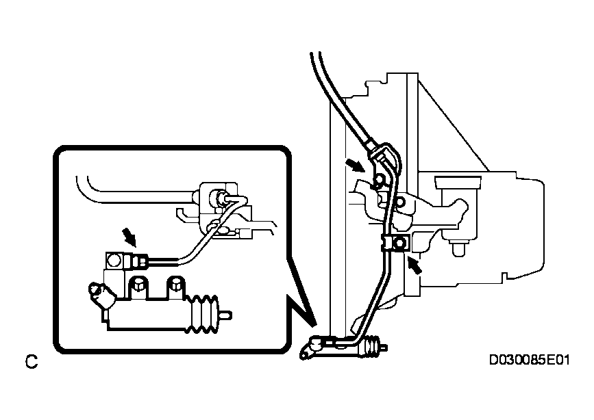
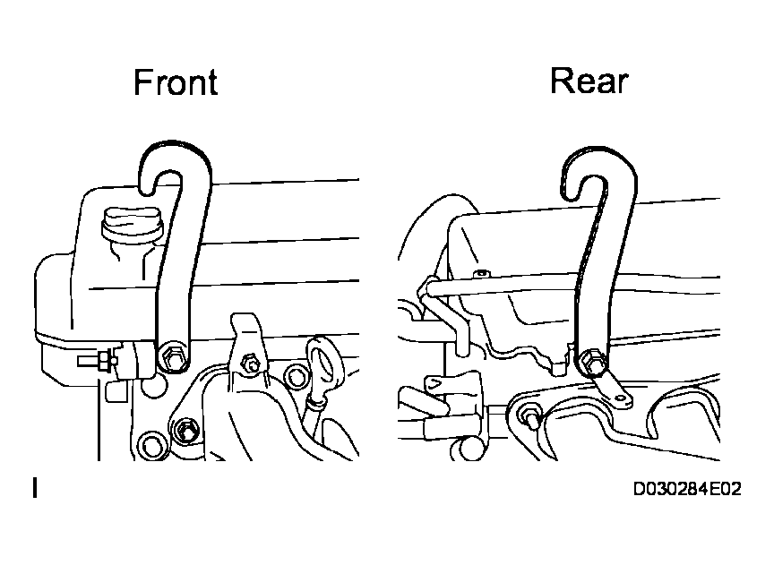

Manual Transaxle Assembly: Removal
- DISCONNECT CABLE FROM NEGATIVE BATTERY TERMINAL CAUTION: Wait at least 90 seconds after disconnecting the cable from the negative (-) battery terminal to prevent airbag and seat belt pretensioner activation.
- REMOVE FRONT WHEEL
- REMOVE ENGINE UNDER COVER LH
- REMOVE ENGINE UNDER COVER RH
- DRAIN TRANSAXLE OIL
- Remove the filler plug and gasket.
- Remove the drain plug and gasket, and drain the manual transaxle oil.
- Install a new gasket and the drain plug.
- REMOVE ENGINE HOOD SUB-ASSEMBLY
- REMOVE COWL TOP PANEL OUTER (See REMOVAL )
- REMOVE NO. 2 CYLINDER HEAD COVER
- REMOVE AIR CLEANER ASSEMBLY
- REMOVE BATTERY
- DISCONNECT WIRE HARNESS
- Remove the bolt and disconnect the wire harness clamp.
- DISCONNECT CONNECTOR
- Disconnect the back-up light switch connector.
- DISCONNECT CLUTCH RELEASE CYLINDER TO FLEXIBLE HOSE TUBE
- Using SST, disconnect the flexible hose tube from the clutch release cylinder.

Courtesy of © TOYOTA, LICENSE AGREEMENT TMS1002SST 09023-00101
HINT:
Use a container to catch the fluid.
- Remove the 2 bolts and disconnect the flexible hose tube.
- Using SST, disconnect the flexible hose tube from the clutch release cylinder.
- REMOVE AIR CLEANER BRACKET
- Remove the bolt and air cleaner bracket.
- DISCONNECT TRANSMISSION CONTROL CABLE ASSEMBLY
- Remove the 2 clips and 2 washers, and disconnect the 2 cables from the transaxle.
- Remove the 2 clips, and disconnect the 2 cables from the control cable bracket.
- REMOVE FRONT DRIVE SHAFT ASSEMBLY LH
- Remove the front drive shaft (see REMOVAL ).
- REMOVE FRONT DRIVE SHAFT ASSEMBLY RH
HINT:
Remove the RH side by the same procedures as the LH side.
- REMOVE FRONT FLOOR PANEL BRACE (See REMOVAL )
- REMOVE FRONT EXHAUST PIPE ASSEMBLY (See REMOVAL )
- SUSPEND ENGINE ASSEMBLY
- Install the 2 hangers in the correct direction.
- Attach the engine chain hoist to the hangers.

Courtesy of © TOYOTA, LICENSE AGREEMENT TMS1002Engine hanger: Parts No. 12281-21010
Bolt: Parts No. 91642-81025
Torque: 40 N*m (408 kgf*cm, 29 ft.*lbf)
CAUTION: Do not attempt to hang the engine by hooking the chain to any other part.
- REMOVE FRONT SUSPENSION CROSSMEMBER SUB-ASSEMBLY (See REMOVAL )
- REMOVE STARTER ASSEMBLY
- Remove the flywheel housing side cover.
- Remove the nut and disconnect the starter wire.
- Disconnect the connector.
- Remove the 2 bolts and starter.
- SUPPORT MANUAL TRANSAXLE ASSEMBLY
- Support the transaxle with a transmission jack.
- REMOVE ENGINE MOUNTING BRACKET LH
- Remove the bolt and disconnect the ground cable.
- Remove the 2 bolts, and disconnect the engine mounting bracket LH from the engine mounting insulator LH.
- Remove the 3 bolts and engine mounting bracket LH from the transaxle.
- REMOVE REAR ENGINE MOUNTING BRACKET
- Remove the 4 bolts and rear engine mounting bracket from the transaxle.
- REMOVE MANUAL TRANSAXLE ASSEMBLY
- Remove the 7 bolts and transaxle from the engine.